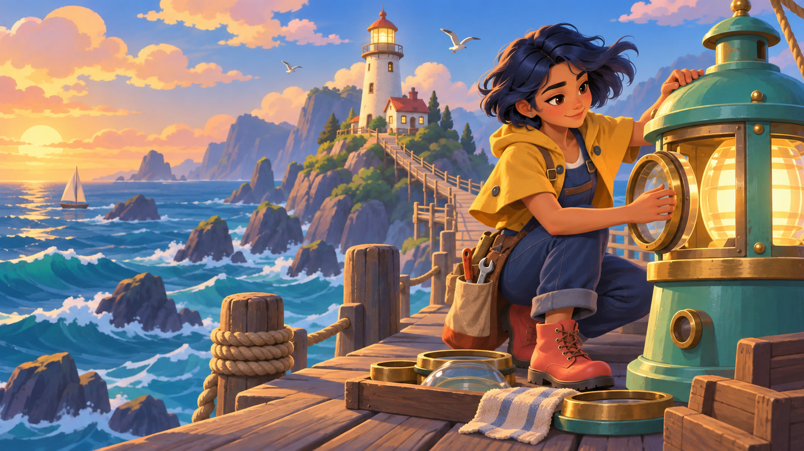
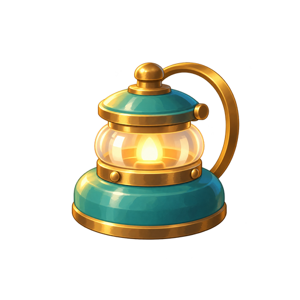
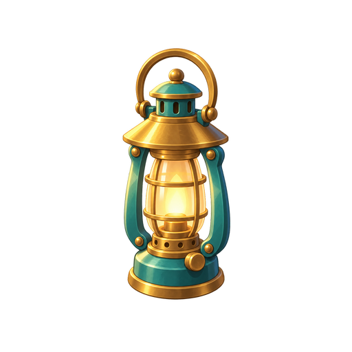
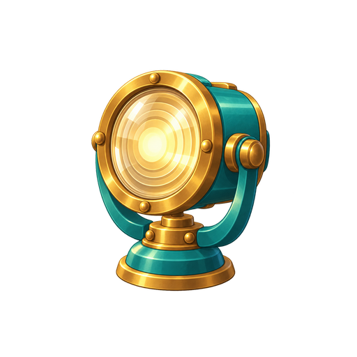
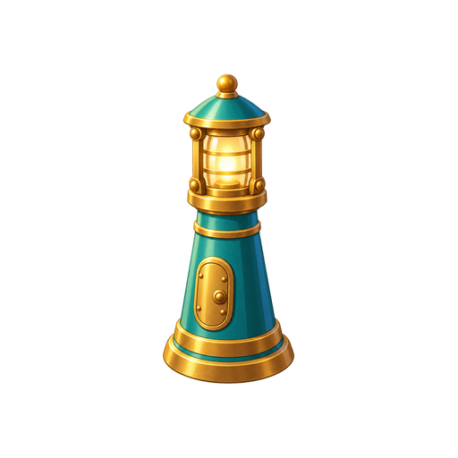

01 / TIDEKEEPER
One sample.
A whole asset family.




More than a shared palette. View, light and materials stay related. Four levels differ in silhouette and structure. Separate PNGs are checked at 64 / 96 px in a composited study.
Rules, iterations and checks ↗